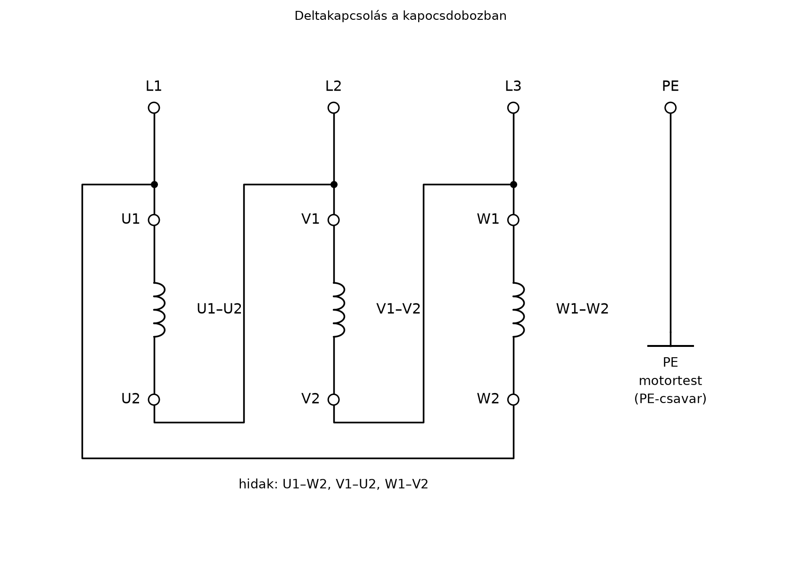
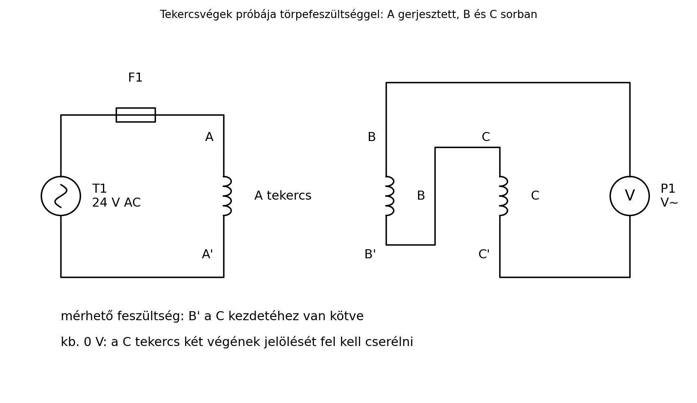

Egy új háromfázisú motort szállítanak a műhelybe. A dobozon ott az adattábla: „230/400 V, Δ/Y, 1,5 kW, cos φ = 0,82”. A szerelő kinyitja a kapocsdobozt, és hat sorkapcsot lát, rajta gyárilag elhelyezett, áthidalható fémlemezekkel. Ha a hidakat rosszul teszi fel, a motor zúgni kezd, túlmelegszik, túláramvédő leold, rosszabb esetben a tekercs szigetelése károsodik. Ha pedig a tápvezeték fázisait rossz sorrendben köti, a ventilátor visszafelé forog, a szivattyú nem szállít, a megmunkálógép kiszakítja a munkadarabot. Ez az alfejezet pontosan ezt a két helyzetet tanítja meg: hogyan kell a motor tekercseit a hálózati feszültséghez illeszteni a kapocsdobozban, és hogyan kell a forgásirányt megbízhatóan beállítani és ellenőrizni.
A képzeletbeli kapocsdobozban hat, két sorba rendezett csavar vagy lapos csatlakozó van. A szabványos kapocstáblán az egyik sorban W2, U2, V2, a másikban U1, V1, W1 felirat olvasható, egymás alatt eltolva (felül W2, U2, V2, alul U1, V1, W1: W2 az U1 fölött, U2 a V1 fölött, V2 a W1 fölött; ellenőrizendő: MSZ EN 60034-8 ábrája és a gyártói kapocstábla). A motor belsejében három, egymástól független tekercs helyezkedik el: az egyik tekercs két vége az U1 és U2, a másodiké a V1 és V2, a harmadiké a W1 és W2 kapocsra van kivezetve. A gyártó a kapocshidakkal lehetővé teszi, hogy a hat kapcsot kétféleképpen kössük össze: csillagba (Y) vagy deltába (Δ). Ezért ugyanaz a motortest két különböző hálózati feszültséghez használható, ha a tekercsfeszültség megfelelő.
Definíció. A kapocsdoboz a motor áramkötéseinek csatlakoztatására szolgáló tér, ahol a tekercsek végei sorkapcsokra vannak kivezetve, és hidakkal alakítható ki a tekercsek kapcsolása.
Szabály. A kapocsjelölések a mai szabvány szerint: a tekercs kezdete U1, V1, W1, a vége U2, V2, W2. Régi motorokon és terveken gyakran U, V, W – X, Y, Z jelölést találsz (U1→U, U2→X, V2→Y, W2→Z; ellenőrizendő: régi MSZ/DIN jelölés), a megfeleltetést mindig méréssel ellenőrizd. (Lásd a Motorok és transzformátorok rajzjelei, kapocstáblák alfejezetet.)
A kapocsdoboz bekötését a következő kapcsolási rajzok mutatják.
A kapcsolási rajz leírása: a felső tápsor L1, L2, L3 az U1, V1, W1 kapcsokra csatlakozik; a három függőleges tekercs U1–U2, V1–V2, W1–W2; az alsó végek (U2, V2, W2) össze vannak kötve, ez a csillagpont – a kapocstáblán ez a W2–U2–V2 sor vízszintes hídja. A PE-vezető a motortest PE-csavarjára csatlakozik.

A kapcsolási rajz leírása: ugyanaz a hat kapocs, de most a szabványos kapocstábla három függőleges hídja köti össze a tekercseket zárt háromszögbe: U1–W2, V1–U2 és W1–V2; a tápfázisok az U1, V1, W1 kapcsokon maradnak, a PE a motortesten.
A valódi kapocstáblán a hat kapocs két, egymás alatti sorban van: a felső sorban eltolva W2, U2, V2, az alsóban U1, V1, W1 (W2 az U1, U2 a V1, V2 a W1 fölött; a fizikai elrendezés gyártónként eltérhet). Így a csillaghíd egyetlen vízszintes sáv a felső soron, a deltahidak pedig három függőleges sáv. Az alábbi ábra a két hídkiosztást a fejezet két motorjával mutatja 400 V-os hálózaton: a 230/400 V Δ/Y motort csillagba kötjük (egy tekercsre ≈ 231 V jut), a 400/690 V Δ/Y motort deltába (egy tekercsre 400 V jut). Az interaktív változatban kiválaszthatod az adattáblát és a hídkiosztást; a kijelző mutatja a tekercsfeszültséget és azt, hogy ez megfelelő, túl nagy (a motor túlmelegszik) vagy túl kicsi (nyomatékhiány). Az „L1–L2 csere” gomb a forgásirányt fordítja meg, a hidakat nem változtatja.

A döntést – melyik híd, és indítható-e a motor csillag–delta indítóval – a következő táblázat foglalja össze 3 × 400 V-os hálózatra.
| Adattábla-feszültség | Tekercsfeszültség | Kapcsolás 400 V-on | Tekercsre jutó feszültség | Y–Δ indítás | Hiba, ha fordítva kötöd |
|---|---|---|---|---|---|
| Δ 230 V / Y 400 V | 230 V | csillag (Y) | 400/√3 ≈ 231 V | nem (üzemben nem deltában jár) | deltában 400 V jut a 230 V-os tekercsre: túláram, a motor leég |
| Δ 400 V / Y 690 V | 400 V | delta (Δ) | 400 V | igen (6 kivezetés, hidak nélkül) | csillagban csak ≈ 231 V: a nyomaték ≈ 1/3, terhelve túlmelegszik |
| csak „400 V Y” (3 kivezetés, belső csillag) | ≈ 231 V | csillag (gyárilag) | ≈ 231 V | nem | – (nem átköthető) |
| csak „400 V Δ” (3 kivezetés) | 400 V | delta (gyárilag) | 400 V | nem | – (nem átköthető) |
| Dahlander, Δ/YY (két fordulatszám) | – | a fordulatszám szerint, lásd Dahlander | – | nem | a két kivezetéscsoport felcserélése: rossz fordulatszám; ha a nagy fordulatszámnál rövidre zárandó kapcsokra kerül a táp: rövidzár |
| egyfázisú hálózat (230 V) | – | háromfázisú motor csak Steinmetz-kapcsolással, lásd egyfázisú motorok | – | nem | – |
A hidak a motor tekercseit a hálózati feszültséghez illesztik, a forgásirányt pedig nem a híd, hanem a fázissorrend adja (lásd lentebb).
Törvény. A háromfázisú tekercselésnél a fázistekercsre jutó feszültség: - csillagkapcsolásban , ahol a vonali feszültség; - deltakapcsolásban .
Szabály. A motor adattáblájának kettős feszültségjelölése mindig a delta feszültség / csillag feszültség sorrendet követi (például 230/400 V Δ/Y vagy 400/690 V Δ/Y). A kisebbik feszültség a tekercs névleges feszültsége delta kapcsolásban, a nagyobbik pedig ugyanannak a tekercsnek a csillag kapcsolásban megengedett feszültsége.
Megjegyzés. Ha a helyszínen csak 230 V vonali feszültségű háromfázisú hálózat lenne (ritka, egyes külföldi vagy régi rendszerek), ugyanezt a motort deltába kellene kötni, mert akkor .
Az adattábla és a kapcsolás összerendelésének gyorsreferenciája (400 V-os hálózat): Csillag és delta kapcsolás.
A háromfázisú aszinkron motor forgásiránya a tápláló fázisok sorrendjétől függ. A forgó mágneses mező iránya a fázissorrenddel egyezően forog; ha a fázissorrend megfordul, a forgó mező is megfordul, és vele a tengely is.
Szabály. A forgásirány megváltoztatásához a motor betápláló oldalán bármely két fázist fel kell cserélni (például L1 és L2, L1 és L3, vagy L2 és L3). A kapocsdobozban a hidakat nem szabad megváltoztatni; azok a feszültséghez illesztett kapcsolást adják, nem a forgásirányt.
Gyakorlati megvalósítás. Ha a motort közvetlenül kötjük, a kapocsdobozban a tápfázisok két vezetékét kicseréljük. Ha mágneskapcsolóról vagy motorvédő kapcsolóról tápláljuk, a cserét a mágneskapcsoló betápláló oldalán vagy a motorvédő kapcsoló után végezzük, mindig azonosítva a fázisokat. A fázissorrendet célszerű fázissorrend-mérővel is ellenőrizni.
Figyelem. A forgásirányváltást kizárólag feszültségmentes állapotban, a tápellátás biztosított kikapcsolása után szabad elvégezni. A forgásirányt a hajtási tengelyvég felől nézve adjuk meg. Ha az L1–L2–L3 (jobbforgású) fázissorrendet az U1–V1–W1 kapcsokra kötjük, a motor ebből a nézőpontból az óramutató járásával egyezően (jobbra) forog (MSZ EN 60034-8; ellenőrizendő: pontos szakasz). Ezért érdemes bekötés előtt fázissorrend-mérővel ellenőrizni a betáplálást.
Mielőtt a hidakat feltennénk és a tápvezetékeket csatlakoztatnánk, ellenőrizni kell a motor villamos állapotát. A mérések védik a motort és a szerelőt is.
Szabvány. A kisfeszültségű villamos berendezések ellenőrzésére az MSZ HD 60364-6 sorozat vonatkozik; a forgógépek kapocsjelölését az MSZ EN 60034-8 szabályozza. A méréseknél a határértékeket mindig az aktuális szabvány és a gyártói adatlap alapján kell meghatározni. (ellenőrizendő: aktuális kiadás, határértékek)
Gyakorlati mérések:
Szabály. A mérés előtt mindig a feszültségmentesítés öt biztonsági szabályát kell alkalmazni: lekapcsolás, visszakapcsolás elleni biztosítás, feszültségmentesség ellenőrzése, földelés és rövidre zárás (ha előírt), szomszédos feszültség alatti részek lefedése.
Régi vagy javított motoron előfordul, hogy a hat vezetékvégen nincs olvasható jelölés. Az ohmmérő csak az összetartozó párokat mutatja meg, a kezdetet és a véget nem; fordítva bekötött tekercsnél a motor csillagban és deltában is aszimmetrikus áramot vesz fel, zúg és melegszik. Ugyanennek a beüzemelés közben végzett gyakorlati változata: Motor kapocsbekötése és beüzemelése.
Az elv. A gerjesztett tekercs tengelyéhez képest a másik kettő tengelye 120°-kal elfordult, ezért (álló forgórésznél) mindkettőben azonos nagyságú, egymáshoz képest azonos fázisú feszültség indukálódik. Azonos értelmű soros kötésnél (az egyik vége a másik kezdetéhez) a két feszültség összeadódik, ellentétesnél kioltja egymást.
Biztonság. Kezdd az öt biztonsági lépéssel: (1) leválasztás, (2) visszakapcsolás elleni biztosítás, (3) a feszültségmentesség ellenőrzése, (4) földelés és rövidre zárás, ahol előírt, (5) a szomszédos feszültség alatti részek lefedése. A próbát csak törpefeszültséggel, oktatói felügyelettel végezd; a motor a hálózattól leválasztva, a kapocsdoboz hidak és tápvezetékek nélkül.
Eszközök: ohmmérő; 24 V-os (legfeljebb 48 V-os) váltakozó feszültségű biztonsági transzformátor (T1) biztosítékkal (F1); váltakozó feszültségmérő (P1); lakatfogó; jelölőgyűrűk.

Lépések:
Egyes műhelyekben egyenáramú (elemes) polaritásvizsgálatot használnak: rövid elemimpulzusra a másik tekercsre kötött középállású műszer kitérésének iránya mutatja a végek viszonyát. A mérési rajza a Tekercselés, impregnálás, csapágyak és szénkefe alfejezet tekercsmérési ábráján látható; háromfázisú állórészen a kitérés értelmezése eltér a transzformátorétól, ezért előbb ismert jelölésű motoron ellenőrizd (ellenőrizendő).
Tipikus hibák: hálózati feszültség a tekercsre (tilos); egyenáramú lökéses módszer úgy, hogy közben a műszer polaritása felcserélődik; a próba után elmarad a végleges jelölés.
Nem minden kapocsdobozban van híd. Mielőtt bármit átkötnél, azonosítsd a változatot:
| Változat és kapocsdoboz | Hidak | Hol tanulod? |
|---|---|---|
| csillag–delta indítás: 6 vezeték (U1, V1, W1 a K1 felől; W2, U2, V2 a K2/K3 felől) | nincsenek; a levett hidakat elveszés ellen a dobozban, rögzítve őrizd | Csillag–delta indítás vezérlése, „Motor kapocsbekötése 6 vezetékkel” |
| Dahlander-motor: 1U, 1V, 1W, 2U, 2V, 2W, gyári belső kötés | a fordulatszámot a vezérlés kapcsolja, a csatlakozás a gyártói rajz szerint | Dahlander, vezérlése |
| egyfázisú kondenzátoros motor: U1–U2, Z1–Z2, kondenzátor | a gyártó rajza szerint | Egyfázisú aszinkron motorok |
| háromfázisú motor egyfázisú hálózaton (Steinmetz-kapcsolás) | csillag vagy delta a feszültség szerint, plusz kondenzátor | Egyfázisú aszinkron motorok |
Figyelem. Gyári hidat csak akkor vegyél le, ha a kapcsolási rajz előírja, és a levett hidat soha ne hagyd lazán a dobozban: elmozdulva zárlatot okozhat.
Egy épületgépészeti kivitelezésen egy légkezelő ventilátort szereltek. A villanyszerelő bekötötte a motort, és a próbaindításnál a ventilátor visszafelé forgott: a levegőt a kifúvó ág felől szívta. A hiba a tápvezetékek bekötésekor történt: a mágneskapcsoló kimeneti oldalán az L1 és L2 fázist felcserélték. A megoldás egyszerű volt: feszültségmentesítés után a mágneskapcsoló után két fázist megcseréltek. A motor ezután a helyes irányba forgott, a légcsatorna nyomásviszonyai a tervezettnek megfelelőek lettek. Az eset tanulsága: a forgásirányt mindig a teljes rendszerrel együtt kell ellenőrizni, nem elég a motort magában beindítani.
Gyakorlás: ennek az alfejezetnek a kidolgozott példái, gyakorlatai és megoldással ellátott feladatai az Összefoglaló feladatgyűjtemény villanyszerelő tanulóknak című kötet 26.3 szakaszában találhatók.
A háromfázisú aszinkron motor kapocsdobozában a hat kivezetés (U1, V1, W1 kezdetek, U2, V2, W2 végek) hidakkal csillag- vagy deltakapcsolásba köthető. Csillagkapcsolásnál a tekercsek végeit közösítjük, és a táp a kezdetekre csatlakozik; ekkor a tekercsfeszültség . Deltakapcsolásnál U1–W2, V1–U2, W1–V2 hidak vannak, és a tekercsfeszültség . A motor adattáblájának kettős feszültségjelölése (pl. 230/400 V Δ/Y) meghatározza, hogy a tekercs milyen feszültségre készült: 400 V-os hálózaton a 230/400 V-os motort csillagba, a 400/690 V-os motort deltába kell kötni. A forgásirányt a betápláló fázisok sorrendje szabja meg; a forgásirányváltáshoz két tápvezetéket kell felcserélni (például L1–L2), a motoron belüli hidakat nem szabad megváltoztatni. Bekötés előtt szigetelési ellenállást és tekercsellenállást kell mérni, a kapcsolást az adattáblával egyeztetni, és a védővezetőt csatlakoztatni. Továbbvitt eredmény. A csillag–delta kapcsolás és a forgásirányváltás ismerete közvetlenül szükséges az Indítás: közvetlen, csillag–delta, lágyindító, csúszógyűrűs, az Egyfázisú aszinkron motorok és a Motor kapocsbekötése és beüzemelése alfejezetekben, ahol a kapcsolási módokat vezérlési és gyakorlati szinten is alkalmazzuk.
A kapocsdobozos csillag–delta kapcsolás logikája és a forgásirányváltás elve stabil elektrotechnikai alapismeret. A kapocsjelöléseket az MSZ EN 60034-8, a villamos berendezések ellenőrzését az MSZ HD 60364-6 sorozat, a mérések módszereit az MSZ EN 61557 sorozat szabályozza; a határértékek (szigetelési ellenállás, csavarnyomaték) a mindenkori szabványkiadás és a gyártói adatlapok függvényei, ezért azokat a felhasználás előtt ellenőrizni kell. A példában szereplő szigetelési ellenállás határértékek tájékoztató jellegűek, és nem helyettesítik a gyártói vagy szabványos előírást.